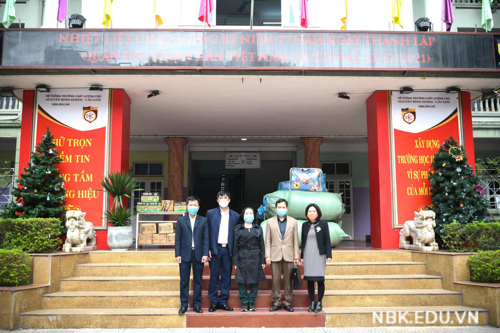
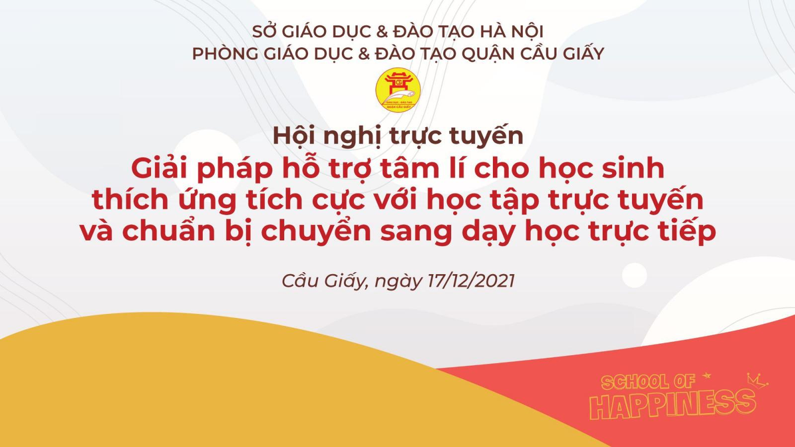
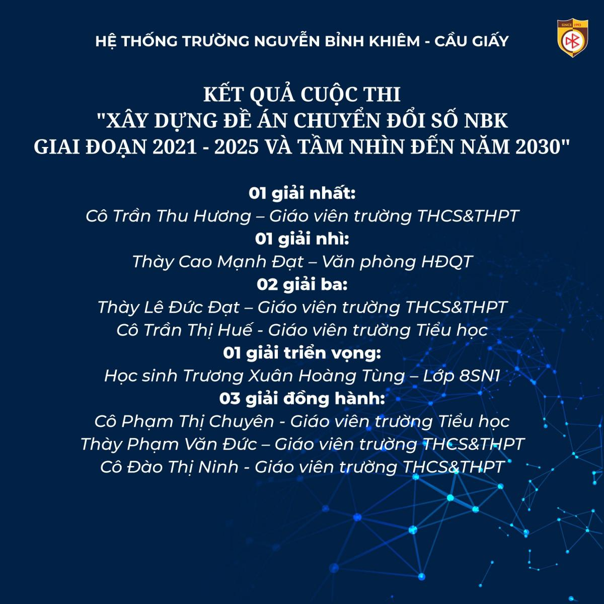
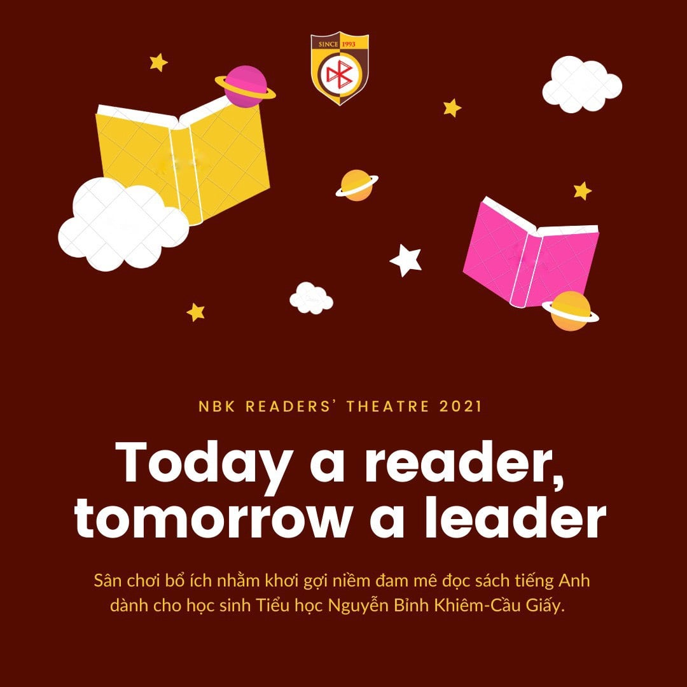
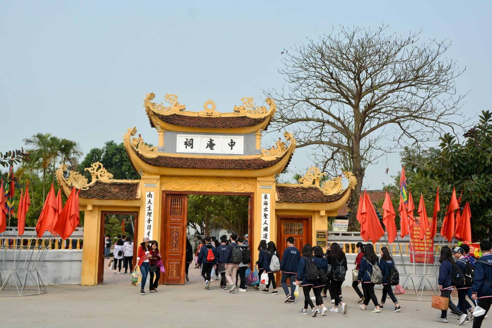

Tin Tức

TRƯỜNG NBK TẶNG QUÀ TRUNG TÂM ĐIỀU DƯỠNG THƯƠNG BINH THUẬN THÀNH – BẮC NINH
Nhân dịp kỷ niệm 77 năm ngày Thành lập Quân đội nhân dân Việt Nam (22/12/1944 – 22/12/2021), sáng nay trường Nguyễn Bỉnh Khiêm – Cầu Giấy đã có buổi tặng quà Trung tâm Điều dưỡng Thương binh Thuận Thành - Bắc Ninh.

GIẢI PHÁP HỖ TRỢ TÂM LÝ CHO HỌC SINH HỌC TRỰC TUYẾN
Trong năm qua, chúng ta đã chứng kiến và trải qua nhiều thời khắc khốc liệt do đại dịch Covid-19 gây ra. Trong lĩnh vực giáo dục, sự khốc liệt của làn sóng Covid-19 thứ tư ở Việt Nam...

KẾT QUẢ CUỘC THI
Được phát động từ những ngày đầu tháng 6/2021, cuộc thi đã thu hút và nhận được nhiều bài thi đến từ toàn thể giáo viên, CBNV và học sinh toàn hệ thống.
Sự Kiện

KHỞI ĐỘNG HỌC BỔNG BUV 2021 - 2022
Năm học 2021 - 2022, trường Đại học Anh Quốc Việt Nam (British University Vietnam- BUV) trao tặng các suất học bổng MOU dành cho học sinh đang theo học tại các trường THPT đối tác, nhằm giúp các em tiếp cận với nền giáo dục ưu tú của Vương quốc Anh.

[TIỂU HỌC] CUỘC THI “NBK READERS’ THEATRE 2021”
Cuộc thi “NBK readers’ theatre 2021” là một sân chơi bổ ích nhằm khơi dậy hứng thú, niềm đam mê đọc sách tiếng Anh đối với học sinh trường Tiểu học Nguyễn Bỉnh Khiêm - Cầu Giấy.

LỄ DÂNG HƯƠNG TƯỞNG NIỆM TRẠNG TRÌNH NGUYỄN BỈNH KHIÊM
Học sinh khối 9 & 12 trường THCS & THPT Nguyễn Bỉnh Khiêm đã tham gia lễ dâng hương tại Khu di tích và đền thờ Trình quốc công Nguyễn Bỉnh Khiêm tại Vĩnh Bảo, Hải Phòng.